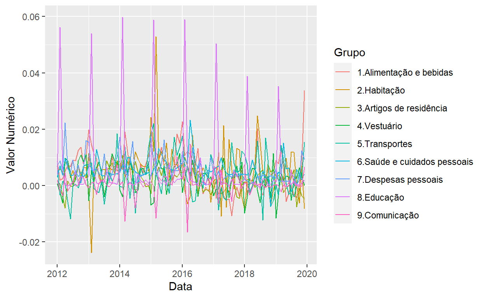

Para visualizar a evolução da inflação de cada grupo de forma separada, é preciso transformar esses em variáveis (colunas), ao invés de instâncias (linhas). Para isso, podemos utilizar a função pivot_wider(), do pacote tidyr. Adicionalmente, vamos transformar a coluna “Mês” em uma coluna de datas (ao invés de caracteres).
ipca_grupos %>%
pivot_wider(names_from = `Grupo`, values_from = `Valor Numérico`) %>%
mutate("Data" = seq(from = as.Date("2012/01/01"), by = "month", length.out = nrow(.))) %>%
paged_table()
ipca_grupos %>%
pivot_wider(names_from = `Grupo`, values_from = `Valor Numérico`) %>%
mutate("Data" = seq(from = as.Date("2012/01/01"), by = "month", length.out = nrow(.))) %>%
pivot_longer(cols = -1, names_to = "Grupo", values_to = "Valor Numérico") %>%
ggplot() +
aes(x = `Data`, y = `Valor Numérico`, color = `Grupo`) +
geom_line()
